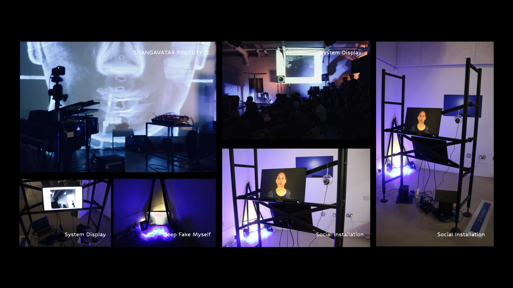
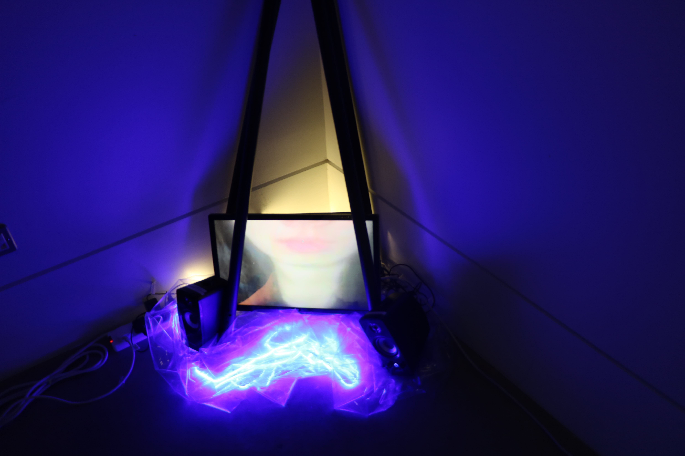
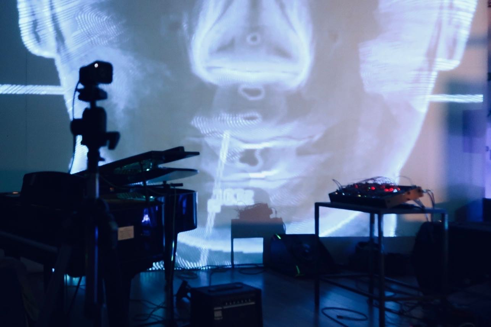

Medium - 3D model, AI, Voice, Face Reganition, Camera, Speaker
RCA Online Graduate Show
https://2022.rca.ac.uk/students/shangyun-wu“A Sociable Avatar - ShangAvatar” is a project aiming to clone ShangYunWu her bios features into a virtual avatar for replacing the social and musical performance activities which need to face a wider audience. In her job, she needs to communicate with strangers, however, she is easily influenced by those unpredictable human emotion responses which inspire her to start with the project.
More details for bio features and interactiv design process, please read the rca online page.
Latest Update
Interactive Installation
“A Sociable Avatar - ShangAvatar” has been developed into a speech-voice based interaction prototype in stage 1. With the intention, ShangYun is doing research on how to clone her singing AI voice (nnsvs) , voice recognition and chatbot. Due to the limitation of open resources and personal ability, the language is English based currently. The technical infrastructure for this project seeks an AI model that can play around speech and singing voice, the voice recognition to detect the emotion in a conversation and a chat bot system for the exploring self-monitoring and social monitoring in aural experience. If everything goes well, computer vision analysis of AI models which can present other sensory processes will be considered to be involved in the development of interaction design.
DeepFake Myself
Shangavatar is a muscian as well. In order to simulate the situation as a muscian, I design the system into a collective emtion detection mode to simulate the crowd emtion in musical performance vanue.
Shangavatar as a musician, visual collab Debster
Ze had a performance in IKLECTIK in July.
If you are interested in invite SHANGAVATAR for exhibition and performance, welcome to contact me.